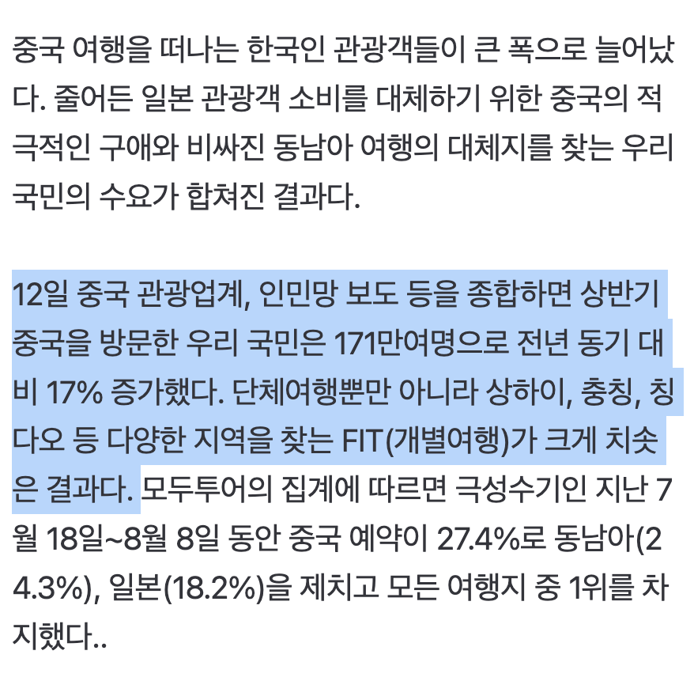
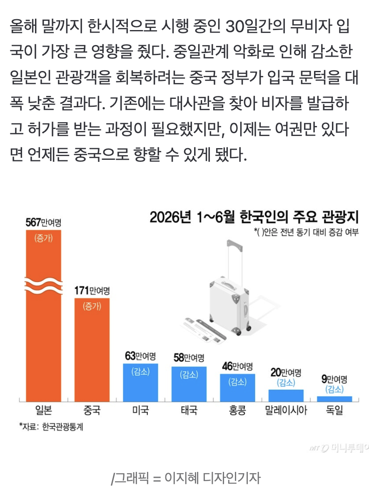

https://n.news.naver.com/article/008/0005412742?cds=news_media_pc
힙해진 '중티' <- 이건 대체 뭐지...


https://n.news.naver.com/article/008/0005412742?cds=news_media_pc
힙해진 '중티' <- 이건 대체 뭐지...
장가계 : 여름엔 가지 말 것.
동반 어르신 65세 까지는 갈만함. 생각보다 많이 걸음.

미래도시를 보고싶다? 상하이가면 볼수있음 기술 ㅈ됨
상하이는 주위에서 몇명 가더라
놀러가는사람 많아졌다는데 뭔 갑자기 중티타령이고 ㅋㅋ
무비자되서 많이 가는거 같긴 해.
ㅋㅋㅋㅋㅋㅋ
칭다오 출장왔는데 다들친절하고 좋더라
다만 담배를 아무데서나 펴가지고 좀 힘듦
중국 씹덕 게임은 존나 하면서
중국 놀러가는 건 욕하네 ㅋㅋ
아이폰 쓰면서 미국 욕하기
플스 닌텐도 쓰면서 일본 욕하기
원신 명조하면서 중국 욕하기
늘 있는 WWE임ㅋㅋ
캡틴따거 그사람도 중국에서 지원 받았던데 ㅋ
상해는 많이 가더라
중티가 진동을 하네
근데 솔직히 유럽 1번 가는것 보다 중국 여러번 가는게 훨 낫긴함.
가격싸. 볼거리 많아. 지역이 달라지면 걍 다른 나라가 됨.
여행 개꿀임 ㅇㅇ
어디어디 가면 다름? 출장으로만 가봐서 상하이 항저우 광저우는 큰 차이 못느끼겠던데 추천 가능해?
신장위구르
ㅇㅇ 나도 중국 관광은 ㄹㅇ 추천함.
관광으론 좋아보임 근대 탈북관련 영상을 하도 많이 봐서 그런지
공안에 대한 인식도 별로고 걍 가기가 싫어짐
인터넷세상에 중국인은 매크로핵쟁이밖에 없으니 여론이 안좋지만 현실세상에서 보면 걍 비슷하게 사는듯
그냥 조선족이 집 왔다갔다하는건 아닌가?
비추 1개 실명제ㅋㅋㅋㅋ
10년 전 중국 여행때는 인외마경을 느꼈는데. 요즘은 다름?
상하이->충칭이였음
중국 이젠 무비자구나
근데 농담 아니고 현실에 중국 여행가는 사람 개많음
중티가 예전처럼 욕으로만 쓰이는게 아니라 자조섞인 느낌으로
중티중티 거리면서 중국 브랜드 좋아하고 중국 여행 저렴하게 가는거 좋아함
시진핑 개새끼
중국 여행 너무 재밌었엉
네 안가요
상하이는 볼만하던데
어르신들 모시고 장가계 이런데 가면 만족도 좋음?? 칭따오 갈랬는데 경치 보러 모시고 갈까